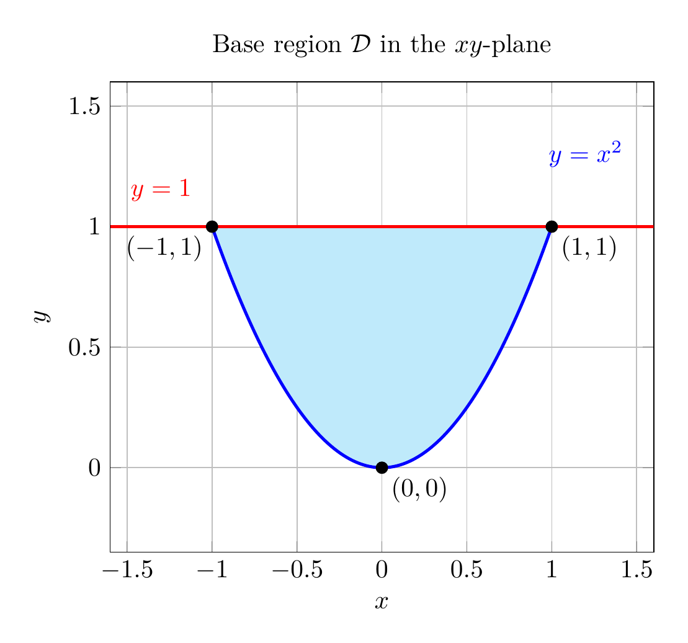
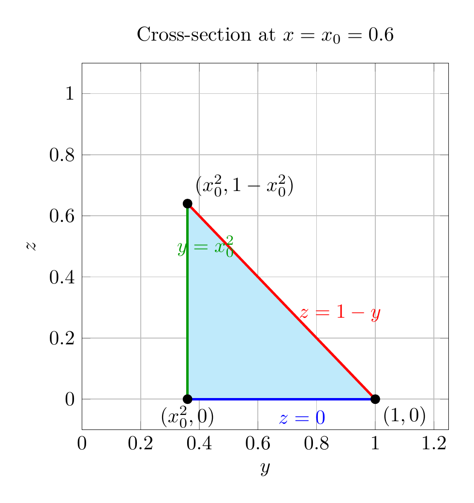
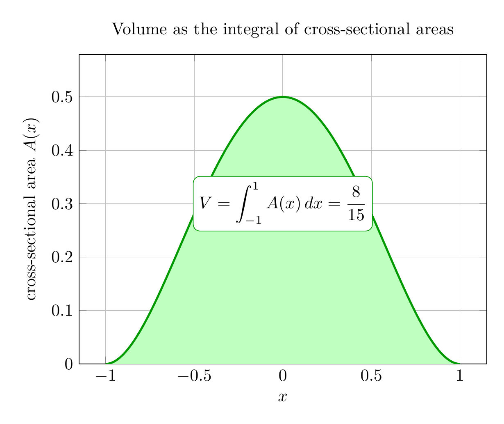

Please solve the problem in the following image.
(Image `20260928_144933_979902_utc_0800_0.png`. Alt text: Image: human_20260928_144933_979902_utc_0800)
20260928_144933_979902_utc_0800_0.png
End of problem
Answer
## Problem
Use a triple integral to find the volume of the solid enclosed by the cylinder $y=x^2$ and the planes $z=0$ and $y+z=1$.
---
## 1. Understanding the solid
The three bounding surfaces are:
* **cylinder** $y=x^2$ — a parabolic trough, independent of $z$ (it runs parallel to the $z$-axis);
* **plane** $z=0$ — the flat *bottom*;
* **plane** $y+z=1$, i.e. $z=1-y$ — the slanted *top*, which is meaningful wherever $y\le 1$.
The top plane meets the bottom plane along the line $y=1,\ z=0$. So the solid is the "wedge" that sits **above** the bottom plane, is capped by the slanted roof $z=1-y$, and is cut off by the parabolic wall $y=x^2$.
---
pgfplots_0.png
---
## 2. The base region in the $xy$-plane
Projecting the solid down onto the plane $z=0$ gives the base region $\mathcal{D}$ sandwiched between the parabola and the line $y=1$:
$$
\mathcal{D}=\{(x,y):\ -1\le x\le 1,\quad x^2\le y\le 1\}.
$$
The limits $x=\pm 1$ come from where the parabola meets the line, $x^2=1$.
---
\documentclass[border=10pt]{standalone}
\usepackage{pgfplots}
\pgfplotsset{compat=1.18}
\usepgfplotslibrary{fillbetween}
\begin{document}
\begin{tikzpicture}
\begin{axis}[
width=9cm, height=8cm,
xmin=-1.6, xmax=1.6, ymin=-0.35, ymax=1.6,
xlabel={$x$}, ylabel={$y$},
title={Base region $\mathcal{D}$ in the $xy$-plane},
grid=both, samples=200,
]
\addplot[name path=par, blue, very thick, domain=-1:1] {x^2};
\addplot[name path=line, red, very thick, domain=-1.6:1.6] {1};
\addplot[cyan!25] fill between[of=par and line, soft clip={domain=-1:1}];
\node[blue] at (axis cs:1.2,1.3) {$y=x^2$};
\node[red] at (axis cs:-1.3,1.15) {$y=1$};
\addplot[only marks, mark=*, mark size=2.2pt, black] coordinates {(-1,1) (1,1) (0,0)};
\node[below left] at (axis cs:-1,1) {$(-1,1)$};
\node[below right] at (axis cs:1,1) {$(1,1)$};
\node[below right] at (axis cs:0,0) {$(0,0)$};
\end{axis}
\end{tikzpicture}
\end{document}

pgfplots_1.png
---
## 3. Setting up the triple integral
For a point $(x,y)\in\mathcal{D}$, standing on the base region, the solid extends **vertically** from the bottom plane $z=0$ up to the roof $z=1-y$. This makes the $z$-limits the innermost ones:
$$
V=\iiint_S dV=\int_{-1}^{1}\int_{x^2}^{1}\int_{0}^{1-y} dz\,dy\,dx.
$$
Equivalently, slicing the solid with the plane $x=\text{const}$ gives a **right triangle** in the $yz$-plane with both legs equal to $1-x^2$.
---
\documentclass[border=10pt]{standalone}
\usepackage{pgfplots}
\pgfplotsset{compat=1.18}
\usepgfplotslibrary{fillbetween}
\begin{document}
\begin{tikzpicture}
\begin{axis}[
width=8cm, height=8cm,
xmin=0, xmax=1.25, ymin=-0.1, ymax=1.1,
xlabel={$y$}, ylabel={$z$},
title={Cross-section at $x=x_0=0.6$},
grid=both, samples=100,
]
\addplot[name path=top, red, very thick, domain=0.36:1] {1-x};
\addplot[name path=bot, blue, very thick, domain=0.36:1] {0};
\addplot[cyan!25] fill between[of=top and bot];
\draw[green!60!black, very thick] (axis cs:0.36,0) -- (axis cs:0.36,0.64);
\node[red] at (axis cs:0.88,0.28) {$z=1-y$};
\node[blue] at (axis cs:0.75,-0.06) {$z=0$};
\node[green!60!black, anchor=west] at (axis cs:0.30,0.5) {$y=x_0^2$};
\addplot[only marks, mark=*, mark size=2.2pt, black]
coordinates {(0.36,0) (1,0) (0.36,0.64)};
\node[below] at (axis cs:0.36,0) {$(x_0^2,0)$};
\node[below right] at (axis cs:1,0) {$(1,0)$};
\node[above right] at (axis cs:0.36,0.64) {$(x_0^2,1-x_0^2)$};
\end{axis}
\end{tikzpicture}
\end{document}

pgfplots_2.png
---
## 4. Evaluating the integral
**Inner integral (height of a column):**
$$
\int_{0}^{1-y} dz = 1-y.
$$
**Middle integral (over $y$):**
$$
\int_{x^2}^{1}(1-y)\,dy=\Big[y-\tfrac{y^2}{2}\Big]_{x^2}^{1}=\tfrac12-x^2+\tfrac{x^4}{2}.
$$
**Outer integral (over $x$), using even symmetry:**
$$
V=\int_{-1}^{1}\Big(\tfrac12-x^2+\tfrac{x^4}{2}\Big)dx
=2\int_{0}^{1}\Big(\tfrac12-x^2+\tfrac{x^4}{2}\Big)dx
=2\Big[\tfrac{x}{2}-\tfrac{x^3}{3}+\tfrac{x^5}{10}\Big]_{0}^{1}.
$$
$$
V=2\Big(\tfrac12-\tfrac13+\tfrac1{10}\Big)=2\cdot\frac{15-10+3}{30}=2\cdot\frac{8}{30}=\frac{8}{15}.
$$
**Cross-section check.** The slice at fixed $x$ has area
$A(x)=\tfrac12(1-x^2)^2$ (a right triangle with legs $1-x^2$), so
$V=\int_{-1}^{1}A(x)\,dx=\tfrac12\int_{-1}^{1}(1-x^2)^2\,dx=\tfrac{8}{15}$ — the same result.
---
\documentclass[border=10pt]{standalone}
\usepackage{pgfplots}
\pgfplotsset{compat=1.18}
\usepgfplotslibrary{fillbetween}
\begin{document}
\begin{tikzpicture}
\begin{axis}[
width=10cm, height=8cm,
xmin=-1.15, xmax=1.15, ymin=0, ymax=0.58,
xlabel={$x$}, ylabel={cross-sectional area $A(x)$},
title={Volume as the integral of cross-sectional areas},
grid=both, samples=200,
]
\addplot[name path=A, green!60!black, very thick, domain=-1:1] {0.5*(1-x^2)^2};
\addplot[name path=z, draw=none, domain=-1:1] {0};
\addplot[green!25] fill between[of=A and z];
\node[draw=green!60!black, fill=white, rounded corners] at (axis cs:0,0.30)
{$V=\displaystyle\int_{-1}^{1} A(x)\,dx=\frac{8}{15}$};
\end{axis}
\end{tikzpicture}
\end{document}

pgfplots_3.png
---
## 5. Answer
The volume of the solid enclosed by the cylinder $y=x^2$ and the planes $z=0$ and $y+z=1$ is
$$
\boxed{\dfrac{8}{15}}
$$
**Key idea:** the parabolic cylinder controls the *base region* in the $xy$-plane, the two planes control the *vertical* extent of each column, so the natural order is $dz\,dy\,dx$ with $0\le z\le 1-y$, $x^2\le y\le 1$, $-1\le x\le 1$.